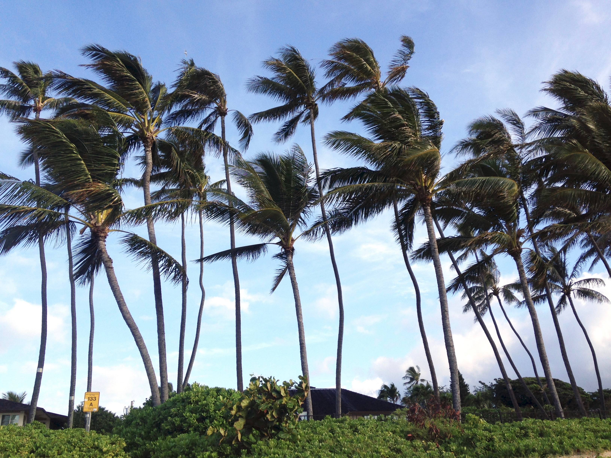

On my way home at the end of June. This past spring was the longest I'd been away from home and my family. I spent my time at Amherst post-semester working for a professor and learning what it means to live on my own. I really do enjoy cooking for myself.
On the plane ride back I was alternating between listening to music and reading [italicized] Dawnland Voices: An Anthology of Indigenous Writing from New England edited by Siobhan Senier. I've only read the Mi'kmaq section and a few pages of the Maliseet portion but already I'm learning so much. @ everyone: read this book!! Especially if you've spent anytime at all in the northeast(ern United States). Worth it.
Home
My second full-day home I jumped in the water first thing in the morning and it felt so good. After weeks of swimming in the strange, freshwater ponds that are so common in Western Mass., it was nice to feel salt on my skin again.
